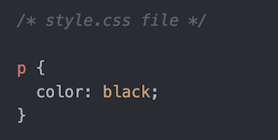

Introduction to CSS, a workshop
üëã Hi! I'm Allison Skinner
I'm a web designer & developer
Based in Athens, Georgia
I graduated from UGA in 2015
with a major in Journalism, minor in spanish and a New Media Certificate
I didn't know what I wanted to do but I knew I wanted to work with code/design
Got a job at a small agency and started building websites.
I loved it!
Got fired from agency job for on-the-side freelancing
Turned on-the-side freelancing into full-time job.
Still doing it over three years later!
A few of my clients include...
Lamar Dodd School of Arts

UGA Performing Arts Center

Avid Bookshop

Athentic Brewing Company

JW York Homes

What is CSS?
It stands for Cascading Style Sheet
CSS determines the STYLE of your webiste (I'll explain "cascading" in a second)
This includes:
- colors
- typography
- layout, positioning
- responsive design for mobile
HTML is the CONTENT
This includes:
- copy
- image files
- links
- breaking things into divs, sections
An HTML website with no CSS
Looks like this [codepen].
So what does cascading mean?
The “cascade” is an algorithm that your browser performs to decide which styles to use on your site.
aka the style that wins
So if you have perfectly written CSS but it's just not working, your "cascade" is likely off
The "cascade" for stylesheets
Style.css comes first. Custom.css comes second.
Custom.css is the “winning” stylesheet
The "cascade" for stylesheets
p {color:white} is the winner because “custom.css” comes AFTER “style.css” in your html HEAD
The "cascade" within your stylesheet
Your browser will also scan your stylesheet to see which CSS wins for each element.
Ranking of importance:
- 3. Elements
- 2. Classes
- 1. IDs
Elements
Elements are the html selectors you use
Like...
- h1, h2, h3, h4, h5, h6
- p, a
- img
- div, span, section
Elements
If you create CSS for an element, like...
Then any link on your WHOLE website will be blue.
Classes
If you add a class to your html element like...
Then that link will be the color red instead of blue. A class wins over an element.
IDs
If you add an ID to your html element like...
Then that link will be the color green instead of red. An ID wins over a class and element.
The "cascade" within your stylesheet
Let's test it out on this codepen
CSS for typography
First, let's add custom fonts to our website
Google Fonts
Adobe Fonts
Custom Font Files
Google Fonts
First pick your custom font on fonts.google.com
Then let's add it to your stylesheet. Using this codepen.
Adobe Fonts
Let's pick out our fonts on fonts.adobe.com
Let's add the custom Adobe font to our website. Using this codepen.
Custom Font Files
This is if you purchase or download custom font files
It doesn't come with a handy copy+paste line of code
For example, I purchased the font GT Haptik for my portfolio website.
Custom Font Files
First add the font files you've downloaded to your website directory
Let's see where I added my custom font files for this CSS Workshop website.
Then let's see where I added them to my css using @font-face [on github]
Custom Font Files
the @font-face rule
CSS attributes you can use for typography
there are almost limitless options, but I'll show you the attributes I use the most often.
CSS Attributes for typography
font-size
- px
- em (what I use)
- also rem and %
color
- predefined colors by browser, like "red", "blue", etc.
- or hex value (like #0000ff for cobalt blue). specific colors.
line-height
- space between lines
- 0 - x. But 0 - 2 most common.
- example '1.4'
CSS Attributes for typography
letter-spacing
- space between letters
- px or em. can use decimal values with em like "0.03em"
font-weight
- "normal", "bold"
- 100, 200, 300, 400, 500, 600, 700
text-transform
- "uppercase", "lowercase", "normal"
CSS Attributes for typography
text-decoration
- "underline" (good for links)
text-align
- "center", "left","right","justify"
Let's demo this
How to style a button
First, let's make it look like a button.
:hover [when you hover on link]
:focus [when you click on link]
:visited [if you've already clicked on link]
Now we understand typography for CSS
what about positioning / alignment / layout?
My reccomendations
flexbox
bootstrap
css grid
Flexbox
a layout mode for CSS
What The Flexbox (flexbox.io) is a great video series
codepen
Bootstrap
this is a CSS framework that you connect to your website
It comes with a lot of pre-loaded styles, functionality, grid layout
For all resources + documentation visit getbootstrap.com
codepen
Ok, no we know a little about typography and alignment
Media Queries, aka Responsive Design
Breakpoints
1440px
1280px
992px
768px
570px
480px
375px
@media
@media (max-width: 768px) {/*code goes here*/}
Translates to...when screen size is at the MAX width of 768px. So anything less than 768px will have this styling.
I use "max-width" for my tablet and mobile media queries
@media
@media (min-width: 768px) {/*code goes here*/}
Translates to...when screen size is AT LEAST the width of 768px. So anything more than 768px will have this styling.
I use "min-width" for laptop vs. desktop specific media queries
@media
Let's test it out
codepen link